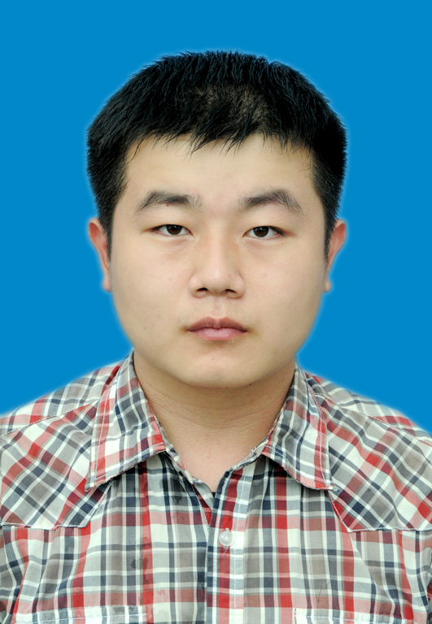
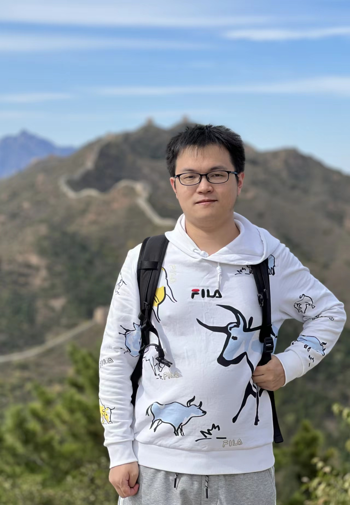
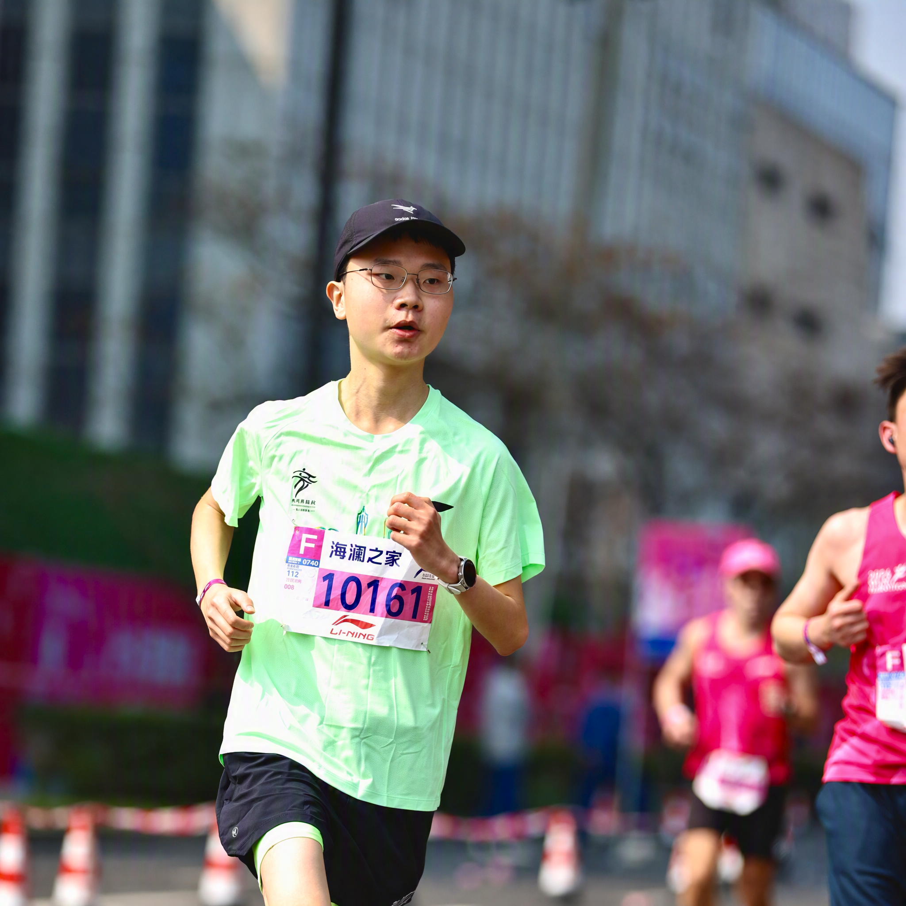
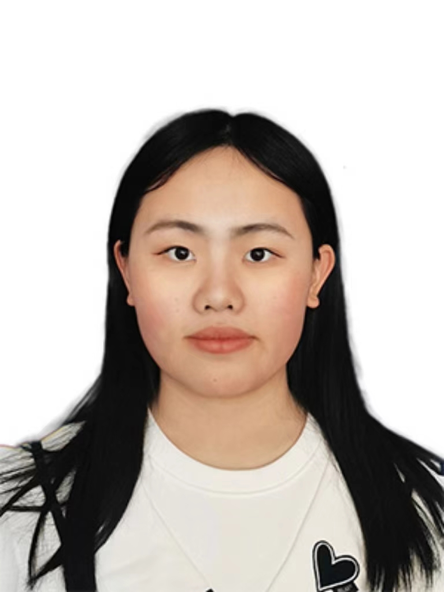
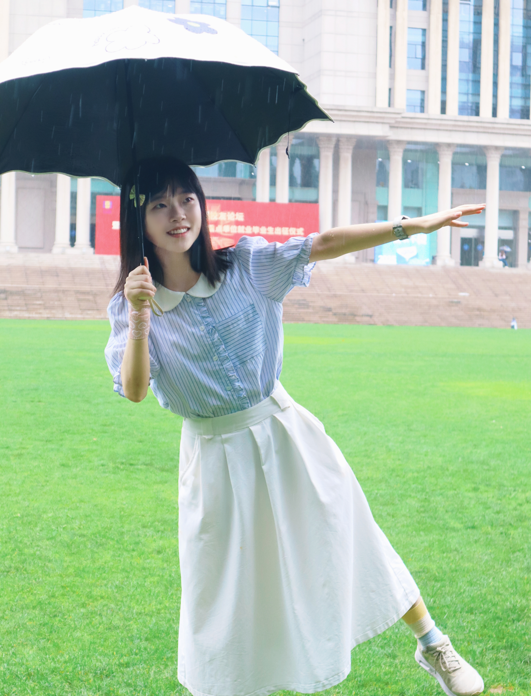
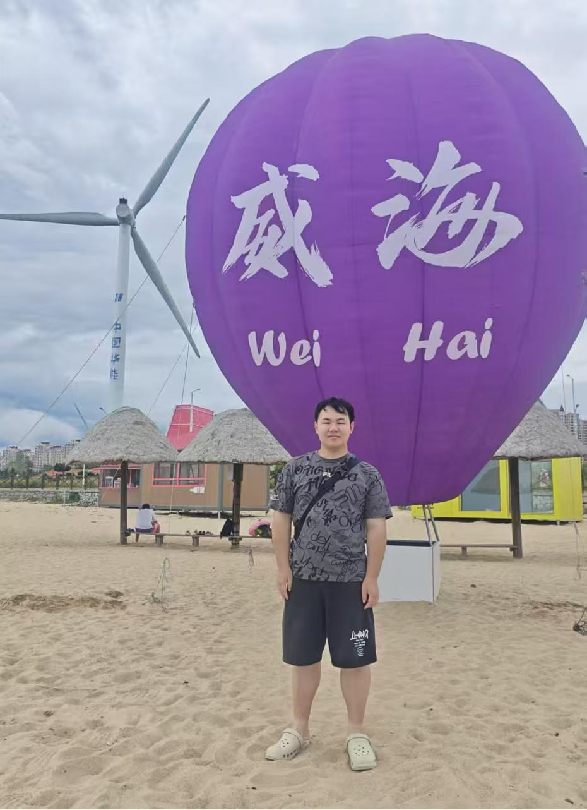

People
Students working across program analysis, software testing, and robotic software reliability.
PhD students
6 students
Si’ao Wang
Entered 2022

Haotian Wang
Entered 2023
Xiaobao Cai
Entered 2024
Hui Li
Entered 2025
Chi Zhang
Entered 2026
Leyi Cheng
Entered 2026
Master’s students
14 students
Xun Zhou
Entered 2024
Shaoran Xia
Entered 2024

Yachen Wu
Entered 2024
Yining Tang
Entered 2024
Hui Zhang
Entered 2024
Yanan Chen
Entered 2025
Caihua Dong
Entered 2025
Mingyu Ren
Entered 2025
Yao Fu
Entered 2025

Mozhi Chen
Entered 2025
Songyu Wang
Entered 2026

Yuxuan Xie
Entered 2026
Daliang Hong
Entered 2026
Jinghua Xu
Entered 2026
Student information from the Fudan University Software Engineering Laboratory. Years indicate entry to the listed degree program.